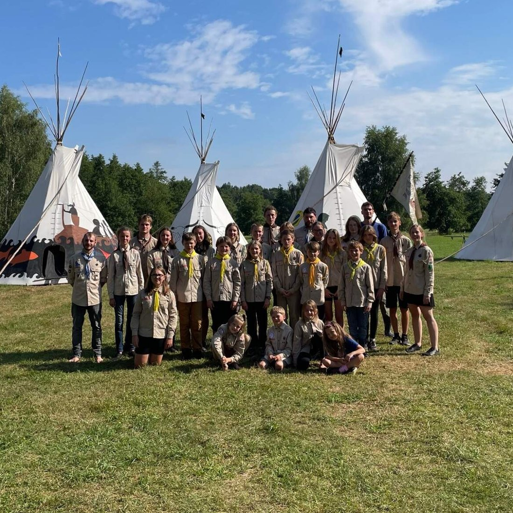
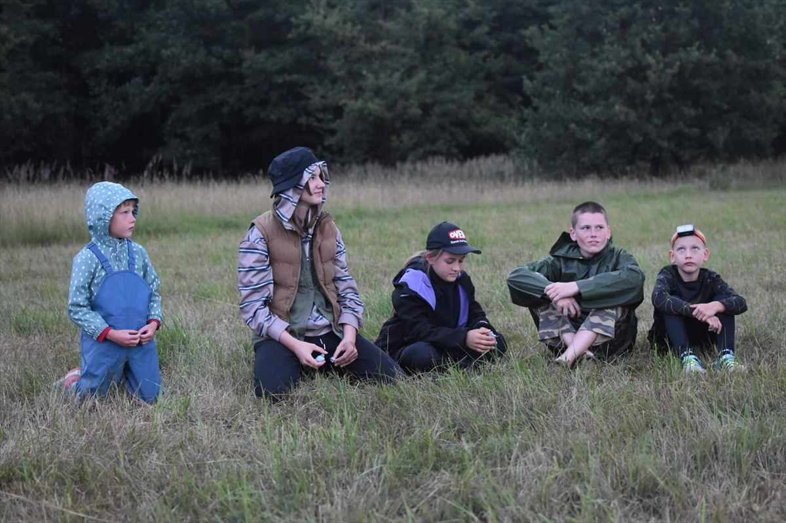
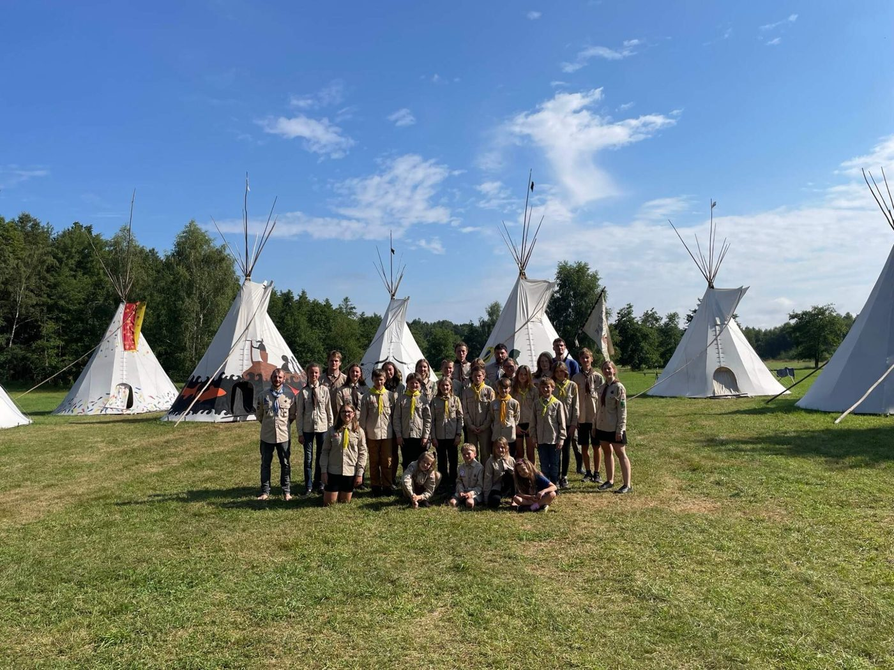
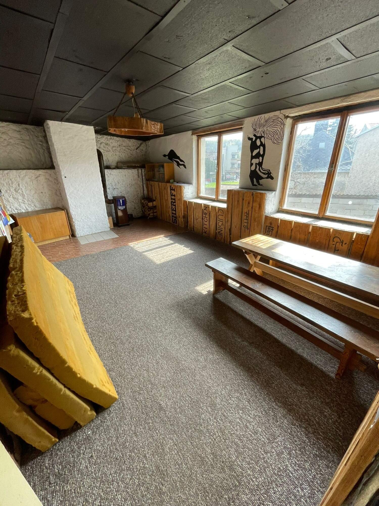

Vydřata
Oddíl benjamínků pro kluky a holky, kteří většinou ještě nechodí do školy. Malé vydry jsou hravá stvoření: nevadí jim déšť ani voda a přírodu rády pozorují, poslouchají, dotýkají se jí a někdy ji i ochutnají.
Vede: Zuzana Havránková
Jsme skautský oddíl z přístavu Dobré naděje v Kutné Hoře. Máme rádi naše město i přírodu, schůzky, výpravy a hlavně letní tábor. Přidej se k nám!

Vydra se v přírodě dožívá zhruba 10 let. My jsme tu třicet a pořád máme mokro v botách.
Skautský oddíl Vydry je nejstarší součástí přístavu Dobré naděje a v Kutné Hoře působí od roku 1997. Za ty roky jsme toho spoustu zažili ve městě i v přírodě. Kdo k nám chodil jako dítě, dnes k nám posílá svoje děti.
Scházíme se v klubovně v Uhelné ulici. Od září do června nás čekají schůzky, víkendové výpravy a výlety, a každé léto vrchol celého roku: tábor v Bludově.

V přístavu Dobré naděje najdeš skauting pro všechny věkové kategorie, od školky až po dospělé.
Oddíl benjamínků pro kluky a holky, kteří většinou ještě nechodí do školy. Malé vydry jsou hravá stvoření: nevadí jim déšť ani voda a přírodu rády pozorují, poslouchají, dotýkají se jí a někdy ji i ochutnají.
Vede: Zuzana Havránková
Skautský oddíl pro kluky a holky ve školním věku. Schůzky, výpravy, hry, dovednosti do přírody a parta kamarádů. Malá dobrodružství zažíváme na každé schůzce, to velké na táboře.
Vede: Iveta Kuchařová
Roverský kmen nejstarších Vyder, založený v létě 2015. Vydra je anglicky otter a každý z nás je trochu jiný (other). Spousta zábavy, netradičních zážitků a pomoci druhým. Všechno děláme trošku jinak!
Vede: Filip Veverka

Tábor je to nejlepší na celém skautském roce. Každé léto jezdíme do Bludova a těší se na něj zhruba padesátka skautů. Právě tam se dá zažít to pravé nefalšované dobrodružství: týden venku, hry, táborák a kamarádi.
Kromě schůzek a výprav se s ostatními kutnohorskými skauty podílíme na akcích pro veřejnost. Přijďte se na nás podívat!
Naše klubovna v Uhelné ulici 588 je kousek od centra Kutné Hory a zároveň blízko do přírody. Patří kutnohorským skautům od obnovení Junáka v roce 1990. Dnešní podobu dostala na začátku 80. let, první patro ale pochází už z 20. let minulého století.
Během týdne se tu scházejí naše oddíly. O víkendech základnu rádi půjčíme skautským oddílům a spřáteleným spolkům z celé republiky, ať už na výpravu, nebo jako výchozí bod pro výlety po Kutné Hoře.

Než pošleš rezervaci, mrkni, jestli je termín volný. Obsazené dny jsou v kalendáři vyznačené.
Děkujeme všem, kteří podporují činnost našeho oddílu. Velmi si jejich pomoci vážíme.
Nové členy přijímáme během celého roku. Napiš nám a domluvíme se, kdy se můžeš přijít podívat na schůzku.